Documentation · look and feel · before/after · 24 Oct 2026
The handbook already wears the ADR design. In html-preview it lost its stylesheet.
Through the README’s html-preview links, every handbook page opened in plain browser defaults while the ADR pages looked right. The cause was one line in one stylesheet. With the fix, the handbook, governance and documentation pages open in the ADR design there too, and nothing changes when the files are opened directly.
§ 1 · the cause
A relative @import that html-preview cannot follow
- The ADR design lives in
doc/adr/assets/adr.css. ADR pages link it directly. The 33 handbook-family pages linked onlydoc/handbook/assets/handbook.css, whose first line pulled the ADR design in:@import url("../../adr/assets/adr.css"). - html-preview.github.io loads every
<link>ed stylesheet from GitHub, but it resolves an@importinside one against its own address, where the file does not exist. So those pages got only the handbook additions and no base design. - Measured through html-preview today: ADR pages render in Inter with the navy edge; every handbook page rendered in Times with no edge, and on a phone the ingestion page was 477 px wide.
- Opened as files, both always looked the same, which is why it went unnoticed.
§ 2 · the fix
Each page links the ADR stylesheet itself
- All 33 pages on
handbook.cssnow linkadr.cssfirst, thenhandbook.css, and the@importis gone. The cascade order is the same as before. - Pages: 29 handbook pages including
PAGE_TEMPLATE.html,doc/index.html, governance, rules, evidence, the archive index, and two older plans that use the handbook stylesheet. - Tests, seen RED first:
python/tests/test_docs_stylesheets.pyDOCSTYLE.01 (no stylesheet underdoc/imports another), DOCSTYLE.02 (every page onhandbook.csslinksadr.cssbefore it), DOCSTYLE.03 (every linked stylesheet exists). - The documentation standard states the rule, so new pages keep it.
- Not touched: the generated ADR and Markdown-rendered pages (already link
adr.css), plans with their own styles, mockups, the WordPress page sources and the published calculator pages.
§ 3 · no deterioration
Opened as files: byte-identical
Seven pages (the six below and ADR-115), at 1280 and 375 px, light and dark: all 28 screenshots are byte-identical before and after. The change only matters where an @import cannot be followed.
§ 4 · before and after, through html-preview
What the README links open
Before: the page as it opens from main today. After: the same page from the branch commit with the fix. Top of each page.
Handbook index
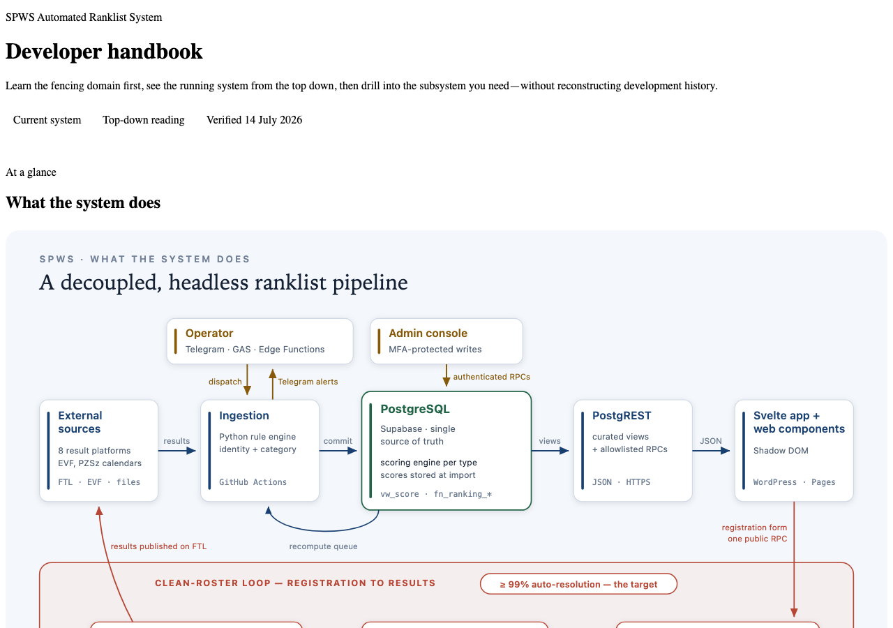

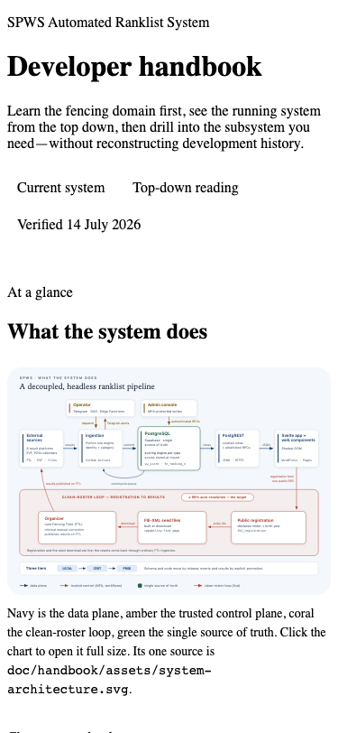
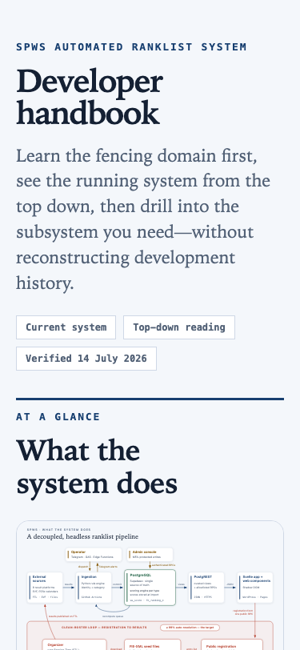
Subsystem page · Ingestion
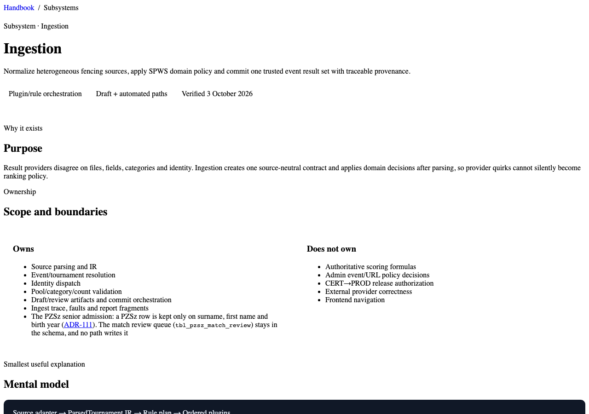
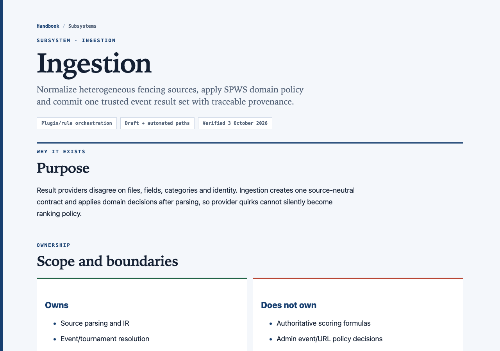
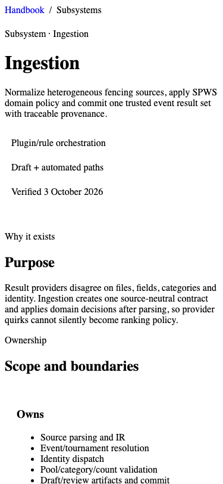
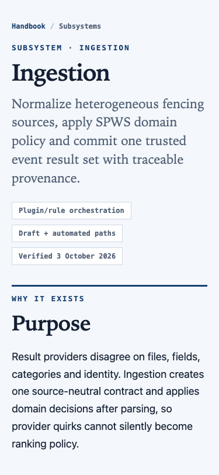
Reference page with tables · Workflow catalogue
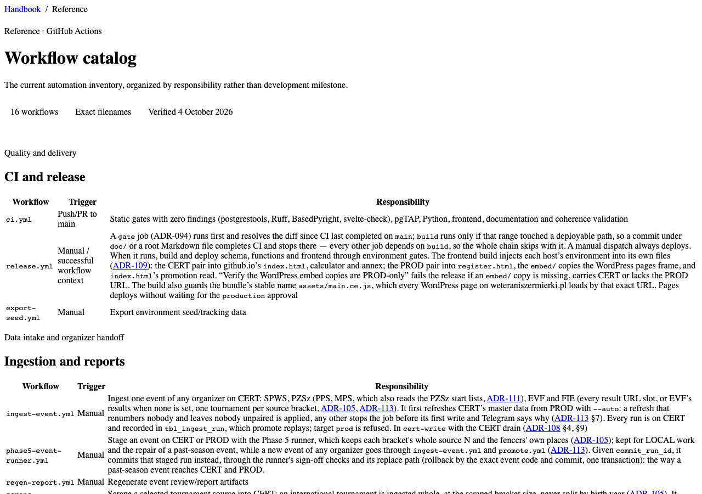

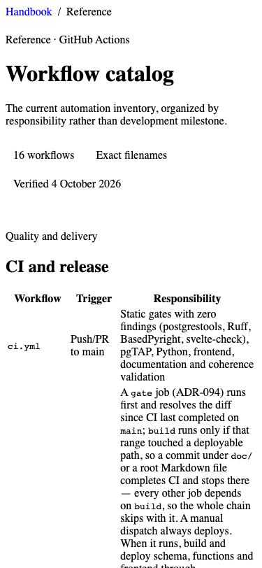
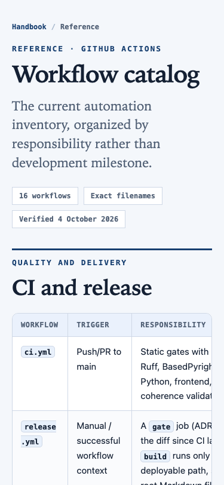
Documentation map
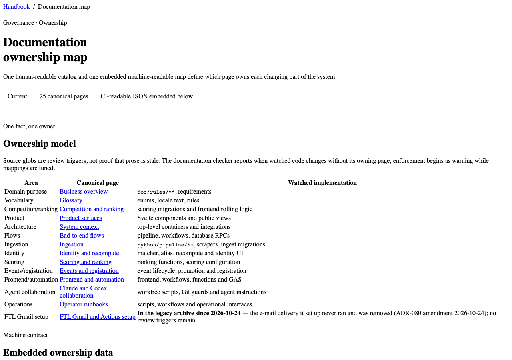

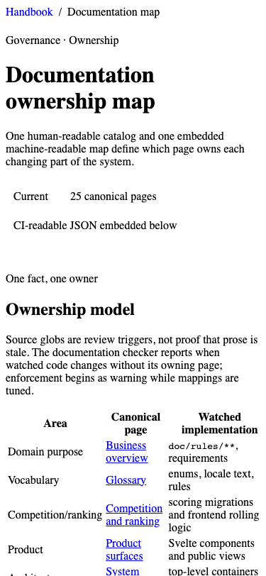
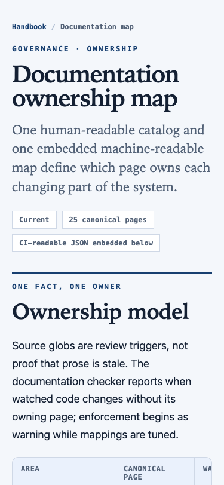
Requirements and governance
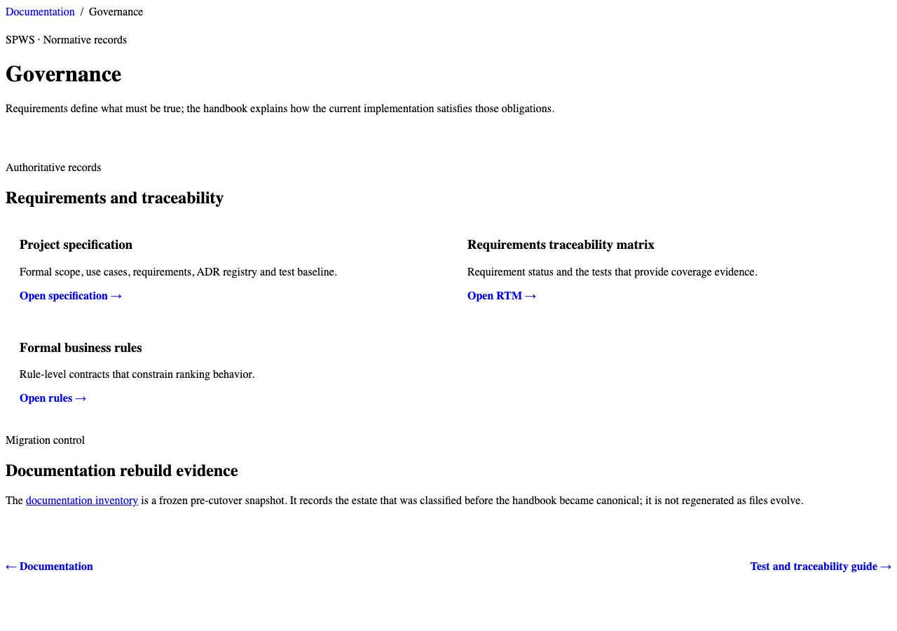
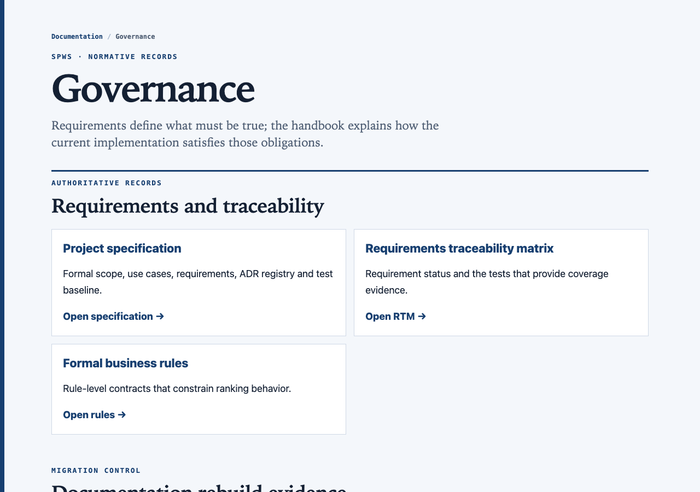
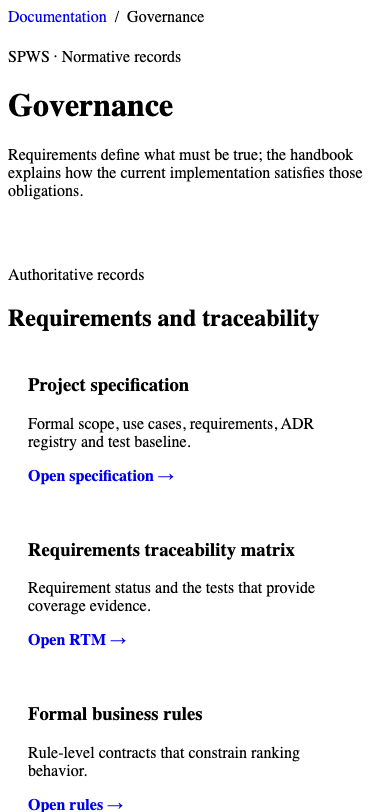
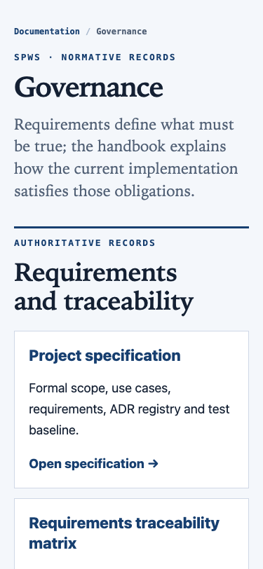
Repository documentation gateway
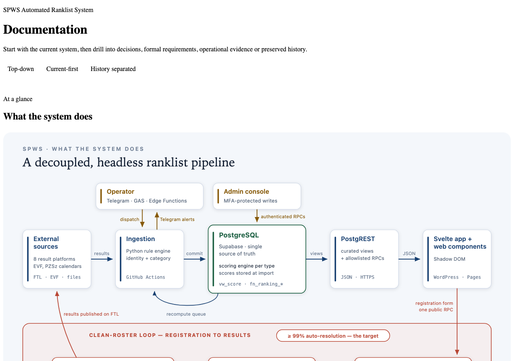
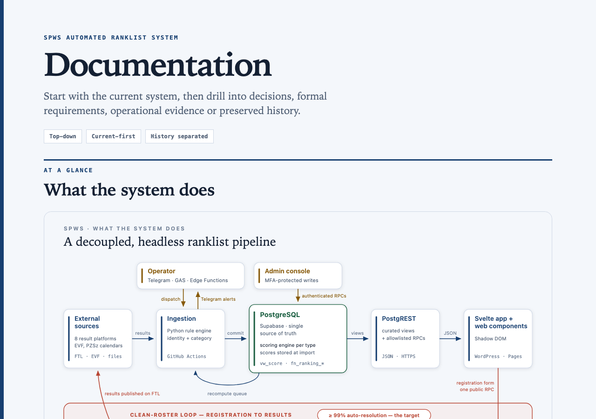
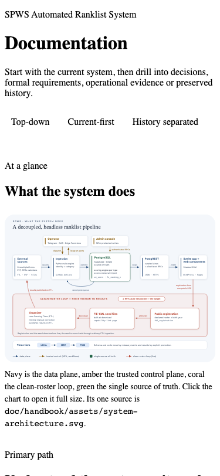
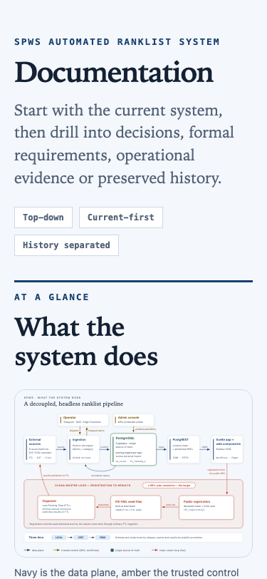
§ 5 · decide this
Three decisions
Answer like E1 A, E2 A, E3 A.
| # | Question | Options | Rec. |
|---|---|---|---|
| E1 | This sheet | A signed off: push the fix to main (after the history rewrite, if you give that its go, so it lands on the new history) B changes first | A |
| E2 | Go further toward the ADR layout | A next step, with its own before/after: give every handbook page the ADR page frame, a contents column built from its own sections and a facts card from its own metadata (owner, status, last verified), generated and kept in sync by a checked renderer like the ADRs B no: the fix is enough | A |
| E3 | A bug in the ADR design itself: on a phone every ADR page is 379 px wide on a 375 px screen. The “Decision” band pulls out 24 px each side while the phone page margin is 20 px. | A fix it in adr.css: below 820 px the band pulls out 20 px, matching the margin; desktop unchanged; with before/afterB leave it | A |
docs-adr-look · 24 Oct 2026 · screenshots: headless Chromium through html-preview.github.io, main vs. the branch commit; local comparison on file:// URLs